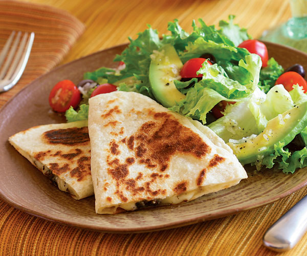

The Perfect Quesadilla Recipe

A Quesadilla, Crispy and Golden
Whether you get one from your favorite Mexican restaurant or make your own, there are a variety of ways to prepare your quesadilla. But sometimes the simplest way is the best. In this recipe you will learn how to make an easy, but delcious cheese quesadilla. This recipe will show you the ingredients and instructions in an easy to read format. Queso, lets get started!
Ingredients
- Flour Tortillas
- Cheddar Cheese
- Gouda Cheese
- Monterey Jack Cheese
- Butter
Instructions
- Grate your cheeses into a separate bowl
- Place pan on medium heat
- Let butter melt on pan
- Place one flour tortilla onto the pan
- Next, dump your cheeses onto the tortilla
- Fold your tortilla in half so one side of it is cooking
- Flip after that side is golden brown
- Finished!